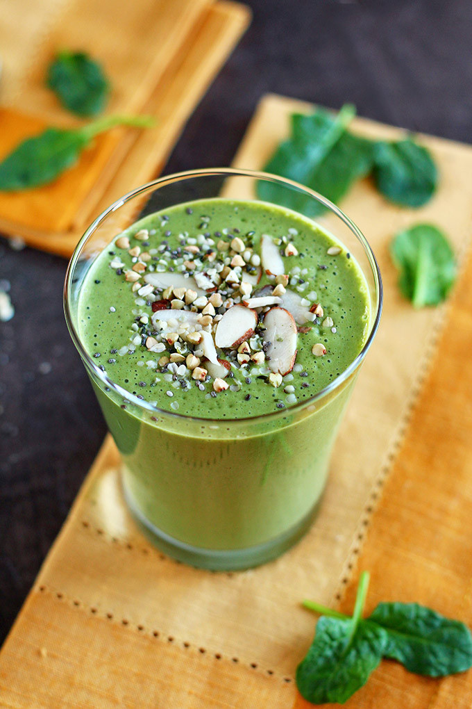

Vegan Green Smoothie
Time: 5 minutes
Cost: $5
Servings: 2

Ingredients
2 cups spinach
2 cups water
1 cup mango
1 cup pineapple
2 frozen bananas
Instructions
1. Tightly pack 2 cups of leafy greens in a measuring cup and then toss into blender.
2. Add water and blend together until all leafy chunks are gone.
3. Add mango, pineapple and bananas and blend again until smooth.
4. Pour into a mason jar (or cute cup of your choice).